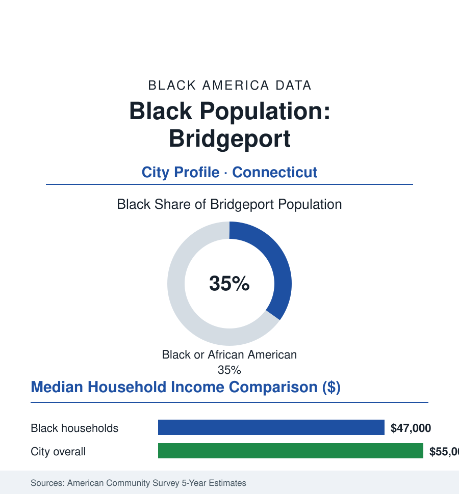

Black Cities
Black Bridgeport: 52,000 People in Connecticut's Largest City
Bridgeport's Black community, about 52,000 strong and 35% of the city, is Connecticut's biggest — built on the East End's factory century. The census portrait.

Bridgeport's Black community numbers approximately 52,000 people — about 35% of the city's 148,000 residents — making Connecticut's largest city also its largest Black community in absolute terms, a factory town's population layered over a seaport's older freedom history (the Little Liberia settlement of the 1820s — a free Black maritime community whose surviving saltbox houses are among New England's rarest Black historic sites). The modern community's geography is the East End and the North End, its economy the post-industrial mix of health care, education, and the public sector, its fiscal story Hartford's fracture repeated at the county's other pole. This profile reads the Park City's numbers.
Little Liberia, the Factories, and the East End
The deep layer distinguishes Bridgeport in the archive: Little Liberia (settled from the 1820s by free Black families — mariners, laborers, and entrepreneurs of the port economy) built homes, a church, and a school a generation before emancipation, two of its houses preserved today as the Mary and Eliza Freeman Houses, the state's most important Black historic site. The industrial century multiplied the community: the Singer sewing-machine works, Remington Arms (a small city's worth of jobs in the war years), the brass and corset and machine-tool factories drew the Great Migration's Connecticut stream to the East End — the neighborhood of Stratford Avenue's Black business row, the churches, and the social world the library's oral histories preserve — and to the housing projects (Father Panik Village, among the nation's first public housing, and its successors) whose rise and troubled decades and demolitions form the East End's built ledger. Deindustrialization struck Bridgeport as completely as any city in this section (the factories' closures running from the 1970s through Remington's long end), and the 1991 municipal bankruptcy — the largest city bankruptcy filing of its era — inscribed the fiscal fracture into national law books before the city's slow, still-running recovery.
The Present Economy and Its Institutions
The current workforce in the census record runs on the successor economy: the hospital systems (Bridgeport Hospital and St. Vincent's), the public schools and city services (the city's largest stable employers), the University of Bridgeport and Housatonic Community College (the accessible campuses — Housatonic's student body majority Black and Latino, the workforce engine), Sacred Heart and Fairfield University in the neighboring town (the town-gown spillover), and the logistics and service economy of the I-95 corridor — with the city's poverty (Black median household income in the high forty-thousands against a metro, Fairfield County, that is among the richest in America — the fracture at its most extreme: the county containing both Bridgeport and Greenwich) the ACS's starkest juxtaposition in New England. The institutional skeleton: the East End's and North End's historic Black congregations, the NAACP chapter (a mayor-making institution in the city's modern politics), the Black Democratic and civic clubs, the Caribbean community (substantial — the carnival and the island associations braiding with the older community as in Hartford), and the cultural anchors from the Klein Memorial's stages to the Freeman Houses' preservation campaign — the community arguing its deep history as a development asset in the city's revival plans.
Schools, Politics, and the Recovery Ledger
Bridgeport Public Schools enroll a student body roughly two-fifths Black (with a Latino share as large — the district among Connecticut's most diverse and its most state-scrutinized, its governance history including a state takeover era whose legality the courts settled and whose data the district's reports keep), its magnet and academy programs (the Fairchild Wheeler campus) the system's bright instruments. The political file: Black mayors and council leadership across the modern era (including the city's nationally known mayoral saga of the 2000s — its comeback arc a part of the public record the community itself adjudicated at the ballot box more than once), a state delegation rooted in the East and North End districts, and the community's turnout machinery a decisive bloc in every close count. The recovery ledger is the current file: the downtown and riverfront development (the Steelpointe harbor project decades in the making), the East End's strategic investment plan (the corridor's rebuild a named city priority), the housing production of the recent years — each project's distribution across the fracture line the data argument the next ACS will grade.
Reading Bridgeport's Numbers
Thirty-five percent of Connecticut's largest city, two centuries from Little Liberia's saltboxes to Stratford Avenue's revival plans: Bridgeport is the atlas's portrait of a Black community whose history is older than the industry that defined it — and whose future is being negotiated, project by project, inside the richest county in America. The Freeman Houses still stand. The census counts what gets built around them next.
More in Black Cities
Black Atlanta: Population, Distribution, and Growth of a Black Metropolis
Metro Atlanta holds more than two million Black residents — roughly one in three, second only to New York. The suburban distribution, migration history, and composition of Black Atlanta in the census data.
Black New York: The Largest Black Population in America
The New York metropolitan area holds about 3.4 million Black residents — more than any metro in the nation — and the city itself about two million. The census profile.
Black Washington: The District and the Metro
The Washington metro holds about 1.6 million Black residents, and the District itself — long a majority-Black city — now records a Black share near 41 percent. The census profile.
Source: U.S. Census Bureau, 2020 Census and American Community Survey 5-year estimates; City of Bridgeport; Bridgeport Public Library's Historical Collections.